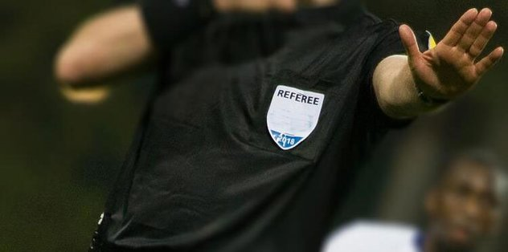

Güney Kıbrıs Rum tarafında birinci ligde görev yapan hakem Andreas Konstantinos'un aracına bomba konulması üzerine UEFA harekete geçti. Rum Adalet ve Kamu Düzeni Bakanlığı'nda, Rum Futbol Federasyonu (KOP) yetkilileri ve polis yetkililerinin katılımıyla olağanüstü bir toplantı gerçekleştirildi. Rum Yönetimi Başkanı Nikos Anastasiadis de, ortaya çıkan bu konunun çözülmesi gerektiğini ifade etti.
Yaşananlar üzerine Rum Adalet ve Kamu Düzeni Bakanlığı'nda, Rum Futbol Federasyonu (KOP) yetkilileri ve polis yetkililerinin katılımıyla olağanüstü bir toplantı gerçekleştirildi. Rum Adalet ve Kamu Düzeni Bakanı Yorgos Savvidis, söz konusu hakemin aracına bomba konulması olayını kınarken, bu olayı UEFA'dan gelen 'kırmızı dosyalarla' birlikte yorumladı. Savvidis, toplantı çerçevesinde bazı kararlar aldıklarını, ilk olarak UEFA'dan uzman yardımı talep ettiklerini belirtirken, UEFA yetkililerinin Güney Kıbrıs'a gelmesi ve buradaki ilgili makamlara yardımcı olması temennisinde bulundu.
Mete Eroğlu 2020